The 2026 Executive Board
The Marching 97 is a completely student run organization with the exception of guidance from our faculty advisors. Read on to learn about the thirteen executives that comprise this year's board!
Manager - Adam Golian
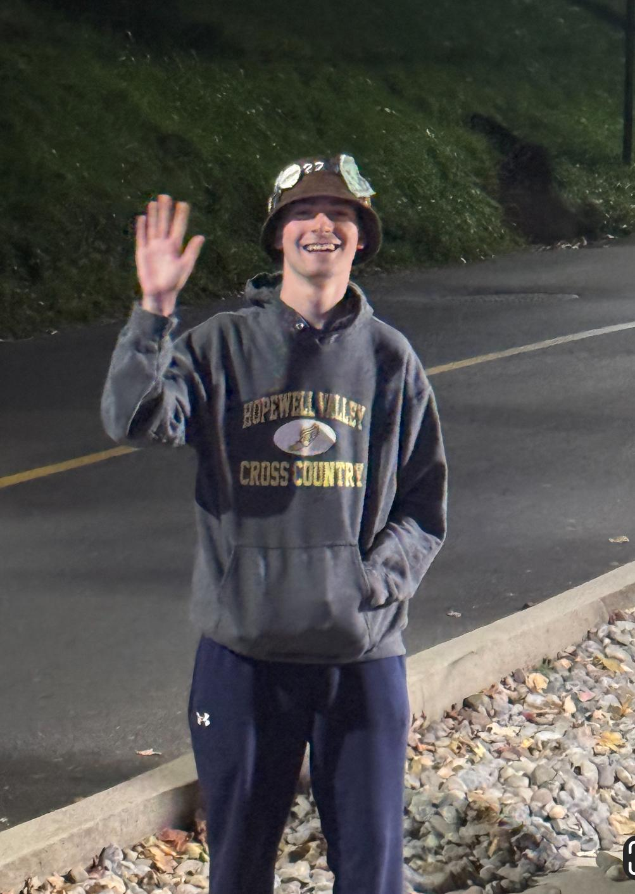
The Marching 97 Manager is the leader of the band off the field. As the head of the executive board, the Manager's duties include running executive meetings and acting as the band's liaison between both Athletics and the University administration. The Manager can be contacted at Manager@marching97.org.
Adam Golian '27 is a senior from Pennington, NJ, pursuing a dual degree in Economics and Statistics. Adam has previously been Staff Assistant '25 and Librarian '24. Adam currently plays Trombone in Rank 1. Adam also plays in Symphonic Band and is a member of Pep Bad, Kappa Kappa Psi, and Actuary Club. In his spare time he can be found running, sleeping, or enjoying some watermelon. A fun fact about Adam is that he enrolled in Lafayette before getting off the waitlist for Lehigh!
Drum Major - Sean Hetzel
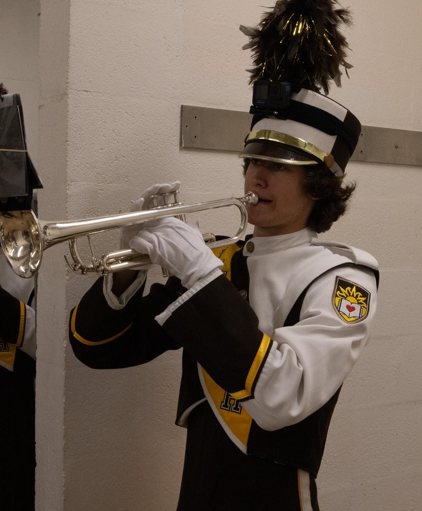
The Marching 97's Drum Major is responsible for running field practice and leading the band in performances. The Drum Major writes the first field show each season and organizes drill writing for the rest of the performances. Look for the Drum Major in a tall white hat as they lead the band in the traditional 'Marching LEHIGH'! Contact the Drum Major at DrumMajor@marching97.org.
Sean Hetzel '28 is a junior from Paoli, PA pursuing a degree in Chemical Engineering. In addition to serving as Drum Major, Sean plays trumpet as a member of Rank 6. He is also a member of Wind Ensemble, Jazz Repertory Orchestra, and the Bill Washer Combo. At Lehigh, Sean is a part of RUF and Pep Band and in his free time can be found hiking, skiing, swimming, or enjoying beef stroganoff! A fun fact about Sean is that he can pop his shoulder in and out of its socket!
Staff Assistant - Adonis Cusu
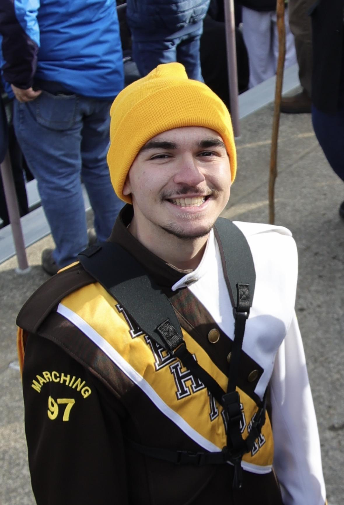
As the financial officer of the Marching 97, the Staff Assistant is in charge of the band's budget. The Staff Assistant is also responsible for helping with the various administrative duties of the band, such as paperwork and attendance. The Staff Assistant plans the annual band banquet at the end of each season as well! The Marching 97's Staff Assistant can be contacted at StaffAssist@marching97.org.
Adonis Cusu '27 is a senior originally from Queens, NY pursuing degrees in Industrial Engineering and Mathematics. He previously served as Refrosh '25. Adonis currently plays the tenor sax in Rank 11. Adonis also plays in Lehigh University Wind Ensemble, LU Phil, LU Clarinet Choir, and Symphonic Band. At Lehigh, Adonis participates in Kappa Kappa Psi and the LU Math and Statistics Society. In his free time Adonis can be found hiking, puzzling, and enjoying cookies and cream ice cream. A fun fact about Adonis is that he is a dual citizen of both the US and Serbia.
Publicity Manager (Pubman) - Mailei Schechterly
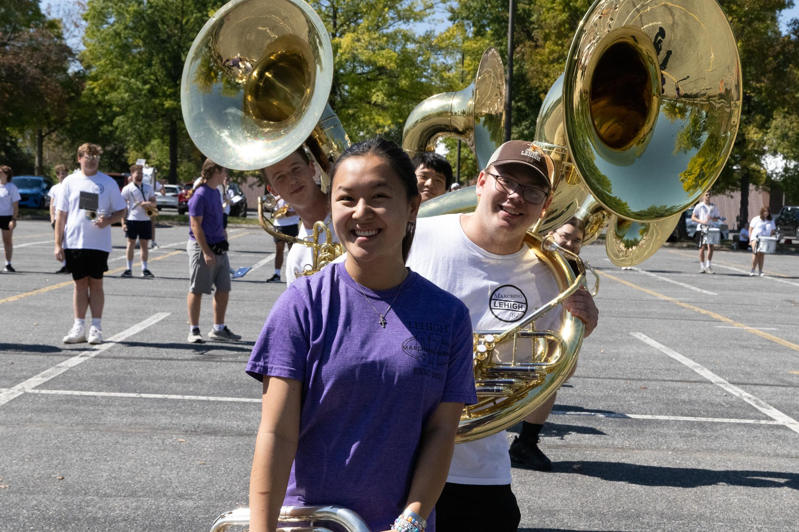
The Publicity Manager, or Pubman, is the band's link with the outside world - they are responsible for updating the band's website and social media, as well as writing the field show announcements. The other chief responsibility of the Publicity Manager is maintaining the band's strong relationships with its many alumni- they also organize events such as Alumni Band Day. The Publicity Manager can be contacted at PubManager@marching97.org.
Mailei Schechterly '27 is a senior from Pottstown, PA majoring in Material Science and Engineering. She previously served as Refrosh '25. Mailei plays the baritone as a part of Rank 8. She is also in Symphonic Band and Dolce Choir. At Lehigh, Mailei is involved with the LU theater department and Lehigh Cru. In her spare time, Mailei enjoys cooking/baking, reading, watching TV, and enjoying tater tots. A fun fact about Mailei is that she loves romance novels.
Freshmen Managers (Refrosh & Refritch) - Oliver Krejbich & Sarah Sandow
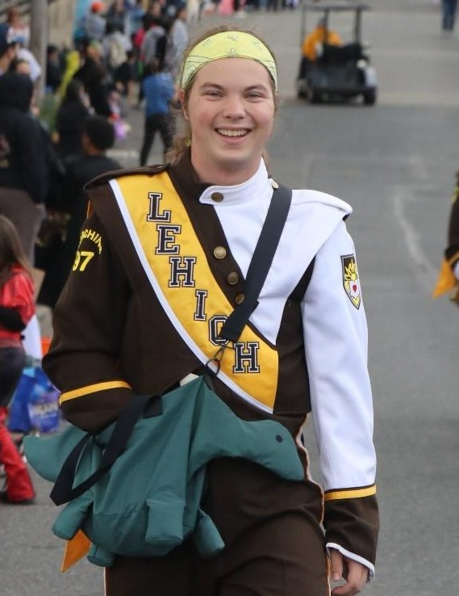
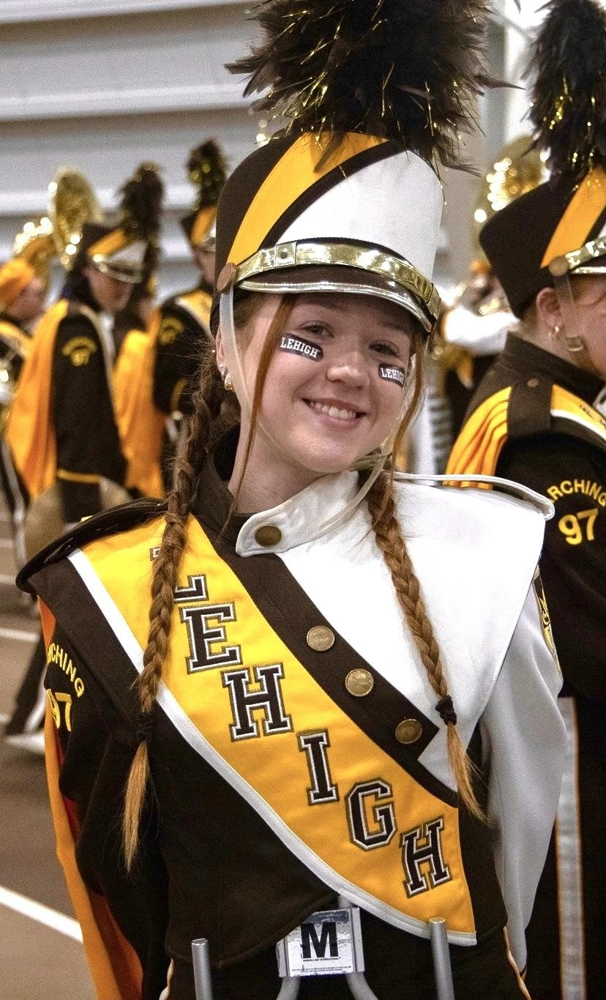
The Freshmen Managers of the Marching 97 - collectively known as Refrotch - are responsible for recruitment and retention of members of the 97. They are in charge of planning Marching 97 involvement at admitted students events, providing information to prospective band members, and helping the incoming class through their first season in the 97. The Freshmen Managers also organize themed psyche days to keep up morale and excitement.
If you're thinking about joining the Marching 97, don't hesitate to email the Freshman Manager of your choice at Refrosh@marching97.org or Refritch@marching97.org!
Oliver Krejbich '28 is a junior from Bangor, PA majoring in Computer Science and Business with a minor in Music. He has previously served the board as Librarian '25. Oliver plays trumpet in Rank 6. He also plays in Symphonic Band and is a member of Pep Band. In his free time, Oliver enjoys clapping like a seal, heel clicking, and doing backflips. A fun fact about Oliver is that he built a trampoline for the Music Appreciation House.
Sarah Sandow '28 is a junior from Sparta, NJ, majoring in Bioengineering with a minor in Mass Communications. She currently plays Snare in Rank 3. She also plays in Wind Ensemble, Symphonic Band, and Jazz Ensemble. Sarah is also a member of the Society of Women Engineers. In her free time she can be found taking pictures, doing graphic design projects, doing yoga, and enjoying a Dunkin' $5 meal deal with sausage, egg, and cheese and an iced coffee with whole milk, blueberry syrup, and brown sugar syrup. A fun fact about Sarah is that she owns at least 100 items of Snoopy merchandise.
Equipment Managers (Toots) - Mia Emery & Andrew Boyle
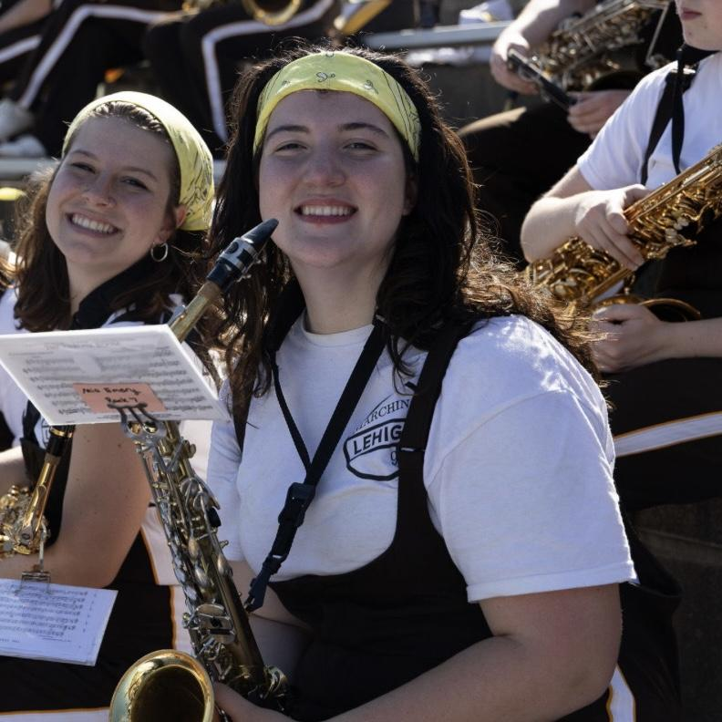
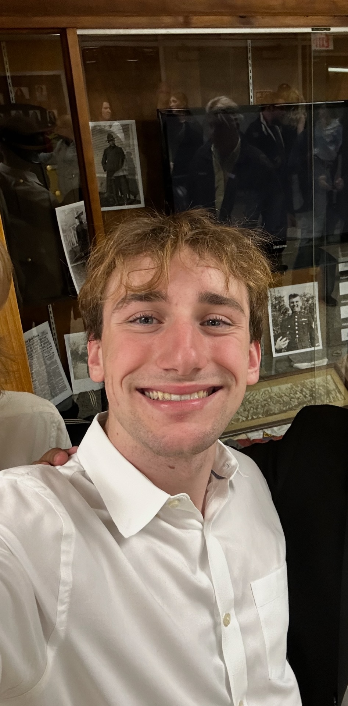
The Equipment Managers are primarily responsible for distribution, maintenance, and transportation of many instruments of the Marching 97 - hence the nickname of Toots. Most members of the Marching 97 use instruments that belong to the band, so the Equipment Managers are never short of work, especially as they also tend to the miscellaneous technical needs of the band. The Equipment Managers can be contacted at Toots@marching97.org.
Mia Emery '29 is a sophomore from Franklinville, NJ, majoring in Population Health. Mia plays the alto sax in Rank 7. She also plays in Wind Ensemble and Symphonic Band. In her spare time, Mia can be found working on musicals, baking, reading, and enjoying a bowl of soup. A fun fact about Mia is that she is a first generation student and has almost passed out playing our stand tune Montero!
Andrew Boyle '29 is a sophomore from Moorestown, NJ, majoring in International Relations. Andrew plays Trombone in Rank 1. He also plays in some LU Jazz Combos and Big Band. He also is a member of bridge club, birding club, and urban planning club. In his free time he can be found biking, practicing photography, playing video games, building legos, or enjoying some fried rice. A fun fact about Andrew is that he is a sailing instructor.
Uniform Manager (Suits) - Japneet Kaur
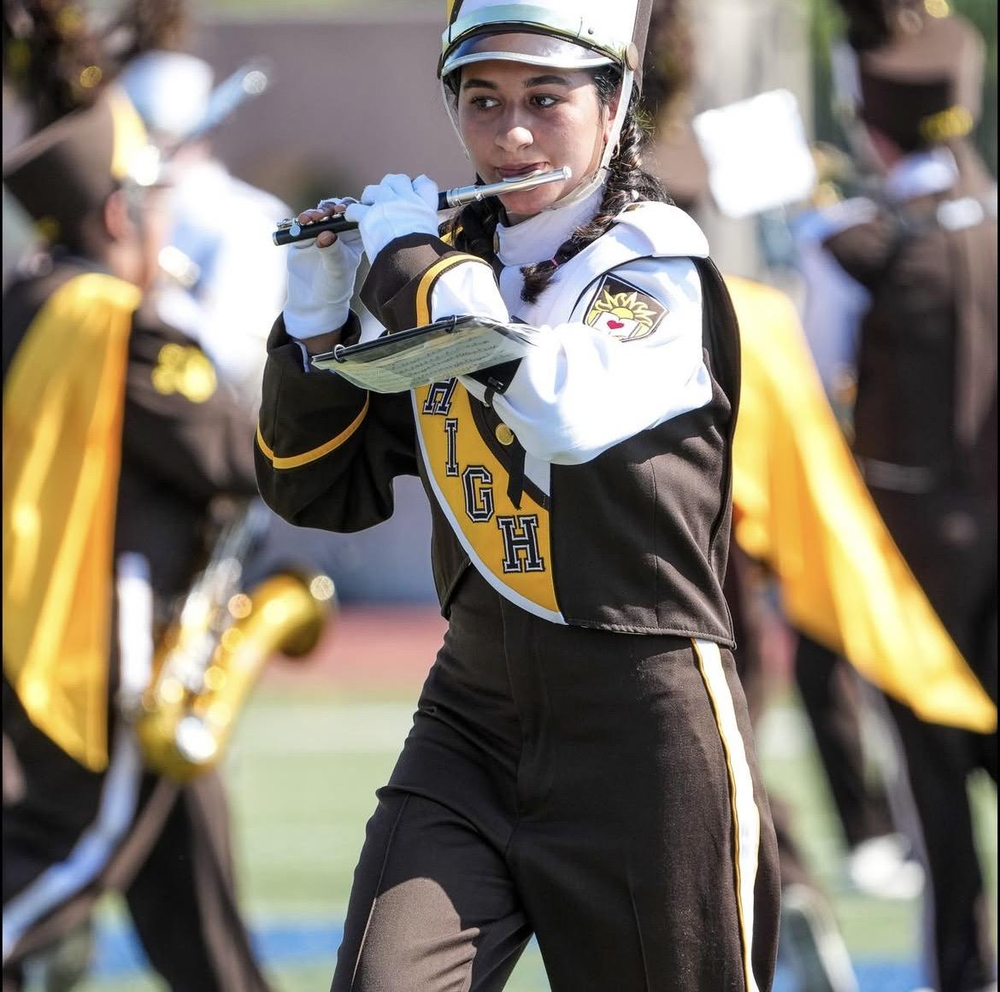
The Uniform Manager - more commonly known as Suits - is responsible for making sure everyone in the band looks their best on game day. The Uniform Manager is in charge of distribution and maintenance of uniforms, as well as ensuring everyone is properly attired at official events. The Uniform Manager can be contacted at Suits@marching97.org.
Japneet Kaur '29 is a sophomore from Upper Darby, PA majoring in Math and Cognitive Science and minoring in Spanish and Learning Sciences. Japneet plays the piccolo in Rank 10 and also plays in Symphonic Band. She also is a member of Kappa Kappa Psi. In her free time, Japneet can be found crocheting. A fun fact about Japneet is that she has a cat named Jellybean.
Student Conductor (StudCon) - Sophia Pham
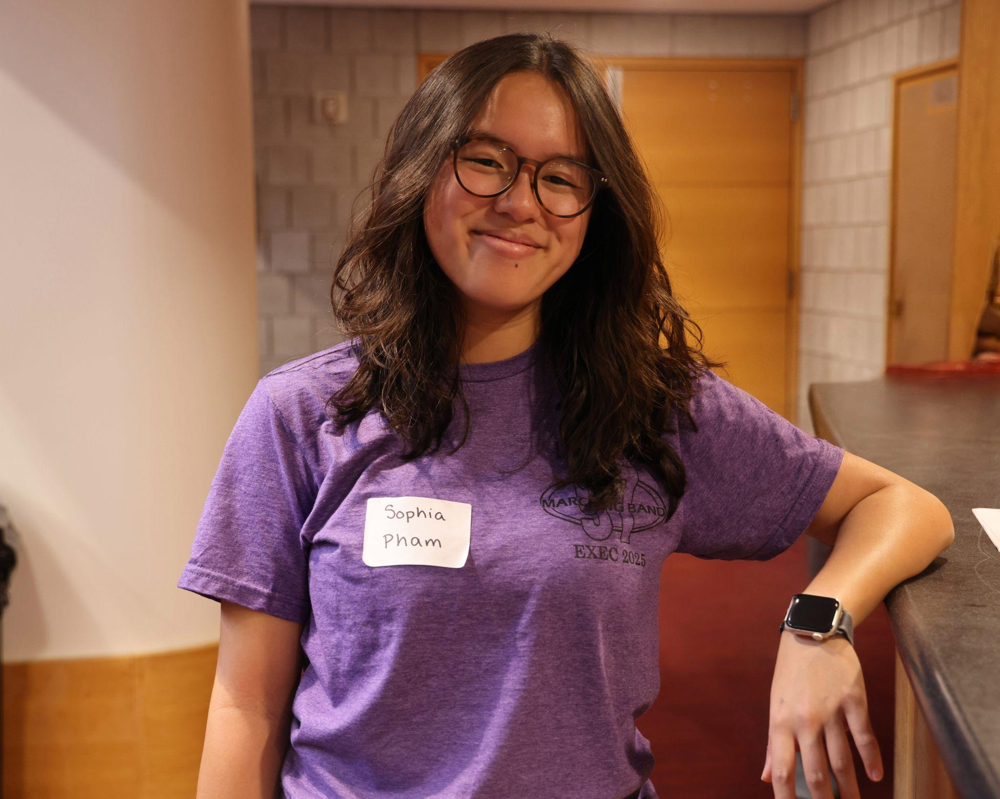
The Student Conductor, or StudCon, of the Marching 97 is responsible for conducting the band in the stands during football games and at other performances as needed. Besides conducting, the responsibilities of the Student Conductor include rehearsing music with the band and selecting the songs played in the stands. The Student Conductor can be contacted at StudCon@marching97.org.
Sophia Pham '27 is a senior from West Grove, PA majoring in Computer Engineering with minors in Data Science and Music. She has previously served the board as Suits '25. Sophia plays the tenor sax in Rank 11. She is also a member of Wind Ensemble, Clarinet Choir, and Dolce Treble Choir. At Lehigh, she also participates in IEEE and Women in Computer Science. In her free time, Sophia enjoys crocheting, knitting, baking, playing video games, and enjoying some mango sticky rice. A fun fact about Sophia is that she loves celebrating random holidays and she loves Minions!
Librarian - Ryan Mitura
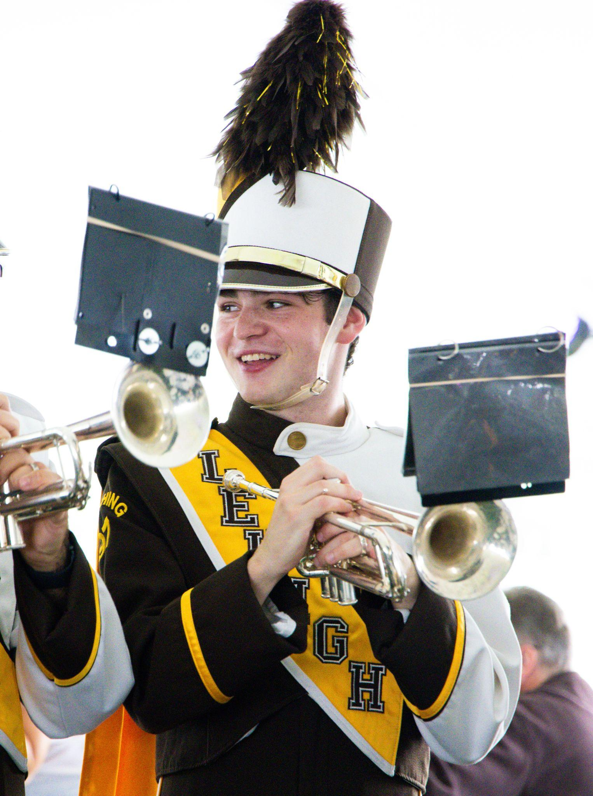
The Librarian of the Marching 97 organizes and maintains the band's music library. They are in charge of creating music folders for the band members, and copying and distributing music throughout the season. The Librarian can be contacted at Librarian@marching97.org.
Ryan Mitura '28 is a junior from Sellersville, PA, majoring in Statistics and Data Science with minors in Economics and Music. Ryan plays the trumpet in Rank 6. He is also a member of Jazz Repertory Orchestra, Wind Ensemble, Symphonic Band, & Brass Ensemble. At Lehigh he also participates in Lehigh Undergraduate Mathematics and Statistics Society, and Actuary Club. In his free time, Ryan enjoys solving puzzles, playing video games, building Legos, or enjoying a plate of chicken parmigiana. A fun fact about Ryan is that he has marched three summers with the Reading Buccaneers!
Historian - Kaylee Delaney
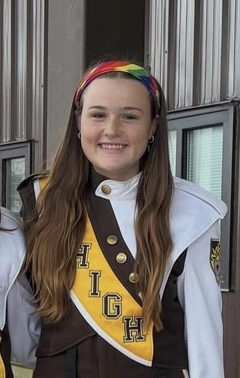
The Historian's major responsibilities are the documentation and interpretation of the Marching 97's history. They maintain and contribute to our archives, and work to make our storied history accessible to band members and the public alike. The Historian can be contacted at Historian@marching97.org.
Kaylee Delaney '29 is a sophomore from Centerport, NY, majoring in Earth and Environmental Science. Kaylee plays the bari sax in Rank 8 and is also a member of Symphonic Band. At Lehigh, Kaylee participates in Kappa Kappa Psi and Lehigh Equestrian Club. In her spare time, she can be found horseback riding, hiking, or enjoying a vanilla bean matcha from Saxbys. A fun fact about Kaylee is that she snowboards!
Senior Representative - Sara Wantrobski
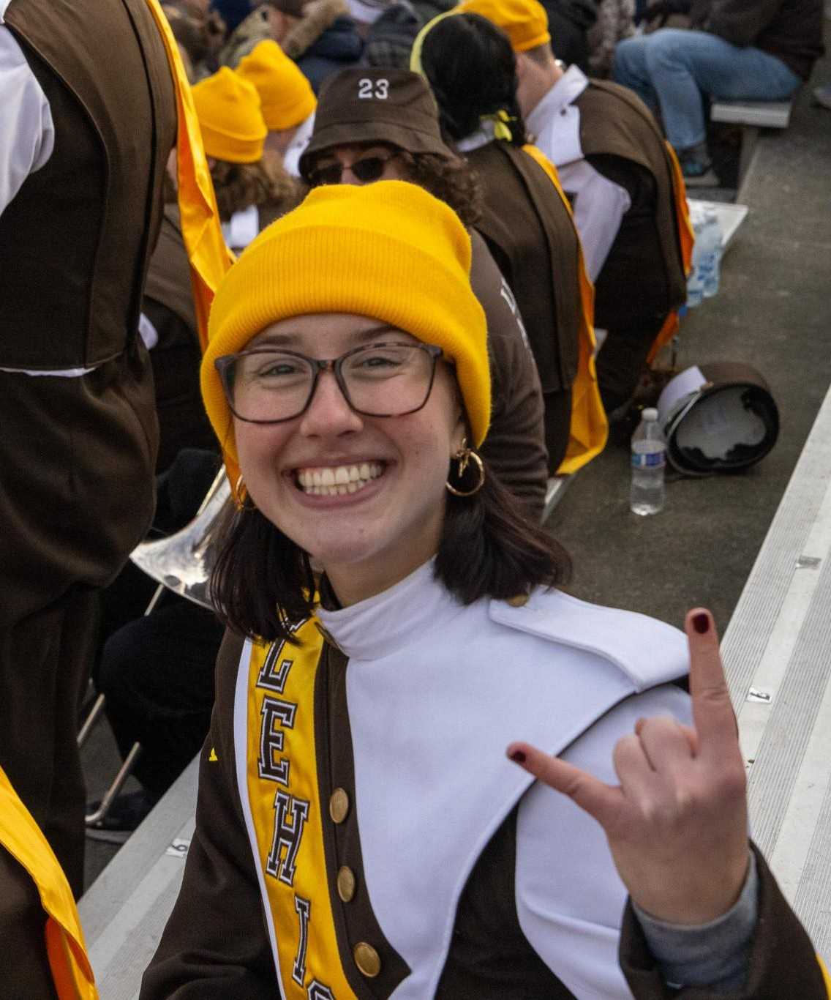
The Senior Representative of the Marching 97 is a member of the senior class responsible for a variety of tasks. They acquire food for the band on game days, plan the senior dinner at band camp, and organize various social events for the band to spend time together outside of rehearsals. The Senior Representative can be contacted at SeniorRep@marching97.org.
Sara Wantrobski '27 is a senior from Moorestown, NJ, majoring in Environmental Studies and Economics. Sara plays the bari sax in Rank 8. She is also a member of Symphonic Band. At Lehigh, Sara also participates in Lehigh's Environmental Honor Society, Epsilon Delta Pi. In her free time, Sara can be found reading, playing the bass, skiing, or enjoying a bowl of farfalle pasta with blush sauce. A fun fact about her is that she is a twin!